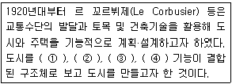
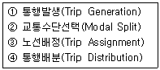
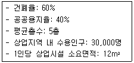
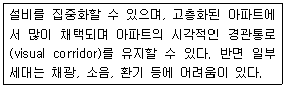
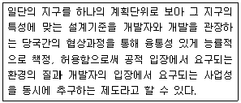
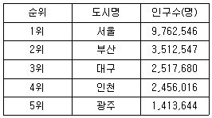
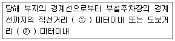

도시계획기사 (2010-03-07 기출문제)
1과목: 도시계획론
1. 다음 중 공원녹지 네트워크의 구성요소와 그 설명으로 옳지 않은 것은?
- 면(Plane): 주택정원, 옥상정원, 공개공지 등의 면적인 형태의 공간
- 거점(Spot): 도시의 소규모 산, 큰 공원 및 농촌지역의 농장, 늪지 등의 생태적 공간
- 핵(Core): 공원녹지 네트워크에 있어서 생물 다양성의 원천이 되는 유전자 공급원이 되어야 할 대규모의 자연 공간
- 생태적 회랑(Eco-corridor): 선형의 자연공간으로 녹지 네트워크에 있어서 중요한 역할을 하는 공간
(정답률: 알수없음)

2. 다음 중 수도권정비계획에서 인구 및 산업의 적정배치를 위하여 구분한 권역에 해당하지 않는 것은?
- 과밀억제권역
- 성장관리권역
- 산업촉진권역
- 자연보전권역
(정답률: 알수없음)
3. 다음 중 도시의 성격을 설명하는데 있어 인구규모를 기준으로 인간정주사회를 15단계의 공간단위로 분류한 학자는?
- L. Mumford
- C. A. Doxiadis
- M. Weber
- J. M. Cowper
(정답률: 알수없음)
4. 다음 중 근대 도시계획제도의 성립과 관련한 아래의 설명에서 ①~④에 들어갈 각각의 용어로 옳지 않은 것은?

- 여가
- 노동
- 거주
- 교육
(정답률: 50%)
5. 도시인구의 증가 속도가 도시산업의 발달 속도보다 훨씬 커서 직장과 주택이 없는 사람들이 도시 빈민화하고 슬럼지구를 형성하며, 이들이 생존을 위해 비공식 경제부문에 종사하는 등 도시 경제의 잉여 부분에 기생하면서 살아가야 하는 현상을 무엇이라고 하는가?
- 젠트리피케이션
- 역도시화
- 가도시화
- 종주도시화
(정답률: 알수없음)
6. 다음 중 도시계획평가를 사전평가와 사후평가로 구분할 때에 사후평가에 대한 설명으로 옳은 것은?
- 계획대안의 선택과 집행 후 실행의 효과를 평가하기 위한 것이다.
- 제안된 대안들간의 선택이나 혹은 계획안과 현재 추세의 연장 상황을 비교하기 위한 것이다.
- 다양한 이해집단에 관련된 계획의 파급영향을 예측하기 위한 것이다.
- 여러 계획대안의 상대적인 장·단점을 찾아내는 작업이다.
(정답률: 알수없음)
7. 다음 중 도시공원 및 녹지 등에 관한 법률에 따른 녹지의 유형과 기능에 대한 설명으로 옳지 않은 것은?
- 공해, 재해, 사고 등의 방지와 완화 - 완충녹지
- 도시의 자연적 환경을 보전하거나 이미 자연이 훼손된 지역을 복원·개선 - 경관녹지
- 도시 내 공원, 녹지 등을 유기적으로 연결 - 연결녹지
- 도시 주변 자연녹지의 훼손을 방지하고 자연 생태계의 보호를 통한 생물 다양성 확보 - 보전녹지
(정답률: 알수없음)
8. 다음 중 존 프리드만(J. Friedmann)이 주장한 교류적 계획(Transactive Planning)에 대한 설명으로 옳지 않은 것은?
- 계획의 집행에 직접적으로 영향을 받는 사람들과의 상호 교류와 대화를 통하여 계획을 수립하여야 한다.
- 인간의 존엄성에 기초를 두고 있는 신 휴머니즘(New Humanism)의 철학적 사고에서 파생하였다.
- 주민의 복지에 영향을 주는 사회적 의사결정과정에 대한 참여를 증가시킬 수 있는 분권화된 계획 체계로의 발전을 의미한다.
- 계획의 직접적 영향을 받는 사람들조차도 무관심한 계획안으로부터 발생할 수 있는 이익을 주민의 관점에서 지지하였다.
(정답률: 알수없음)
9. 다음 중 지리정보시스템(GIS)에 대한 설명으로 옳지 않은 것은?
- 지리·공간적 정보 및 자료를 체계적으로 저장, 검색, 변형, 분석하여 사용자에게 유용한 정보를 제공한다.
- GIS에 의한 분석은 자료의 질과 사용자의 분석능력에 영향을 적게 받아 결과의 정확도나 가치가 보장된다.
- 주요 기능으로는 자료의 수집, 예비적 처리, 자료의 관리, 자료의 변환 및 분석, 결과물 제작 등이 있다.
- GIS를 이용하여 위치, 조건, 추세, 경로, 패턴, 모형 등을 조사·분석할 수 있다.
(정답률: 알수없음)
10. 다음 중 학자에 따른 도시의 정의가 잘못 연결된 것은?
- 워스(L. Wirth) - 사회적으로 이질적인 사람들로 구성되어 있고 상대적으로 넓은 면적과 높은 인구밀도를 가진 정주지다.
- 웨버(M. Weber) - 주민의 대부분이 농업이 아닌 공업이나 상업에 종사하여 얻은 수입으로 생활하는 커다란 취락이다.
- 다비도프(P. Davidof) - 도시의 결정요인은 인구나 건물이 아니라 예술·문화·종교·민주적 정치형태다.
- 쇼버그(G. Sjoberg) - 지적 엘리트를 포함한 각종 비농업적 전문가가 많으며 상당한 규모의 인구와 인구밀도를 갖는 공동체다.
(정답률: 알수없음)
11. 다음 중 도시재개발사업의 문제점과 개선방안에 대한 설명으로 옳지 않은 것은?
- 지금까지의 도시재개발사업은 상위계획에 입각한 일관성 있는 정책이기보다 행정 편의 위주의 대책으로 시행된 경우가 많았다.
- 도시재개발사업이 지구 단위의 미시적 관점에서 주로 진행되어 주변 지역과 전체 도시와의 체계성이 상실되고 있다.
- 도심재개발사업은 토지이용의 고도화를 위해 초고층 업무상업기능 위주로 진행되어 다양한 도시문제를 양산하고 있다.
- 도심재개발사업의 활성화와 주거환경의 개선을 위해서는 복합용도개발보다는 순수한 주택단지 계획기술의 개발에 힘쓸 필요가 있다.
(정답률: 알수없음)
12. 성장관리에 대해서 주 및 자치체가 자신의 행정구역에 있어서 장래 개발의 속도, 양, 형태, 위치, 질에 의도적인 영향을 주고자 하는 것으로 정의를 내린 학자는?
- J. Gottmann
- P. Healey
- D. Godshalk
- H. Hoyt
(정답률: 40%)
13. 다음 중 국토의 계획 및 이용에 관한 법률에서 중고층주택을 중심으로 편리한 주거환경을 조성하기 위한 목적으로 지정하는 용도지역은?
- 제2종전용주거지역
- 제3종일반주거지역
- 준주거지역
- 제2종일반주거지역
(정답률: 24%)
14. 다음 중 정부체계이론을 1차산업, 2차산업, 3차산업의 입지이론으로 구분하였을 때 3차산업의 입지이론이라고 불리는 것은?
- 동심원 이론
- 중심지이론
- 최소비용법
- 상호의존론
(정답률: 37%)
15. 다음 중 미래 도시의 새로운 계획 패러다임의 방향으로 옳지 않은 것은?
- 미래 사회에 맞는 새로운 U-도시계획
- 지속가능한 도시개발로의 전환
- 지역별 특화를 위한 도농분리적 계획체계로의 전환
- 시민참여의 확대와 계획 및 개발주채의 다양화
(정답률: 50%)
16. 다음 중 도시계획가가 지리·공간자료를 바탕으로 수행하는 주요 활동인 4M에 해당하지 않는 것은?
- 측정(Measurement)
- 도면화(Mapping)
- 관찰(Monitoring)
- 제작(Making)
(정답률: 28%)
17. 1970년대 중반 이후 미국에 도입된 성장관리정책에 대하여 넬슨(Arthur. C. Nelson)과 듀칸(Jane B. Ducan)이 제시한 목적과 거리가 먼 내용은?
- 경제적 형평성 제고
- 효율적인 도시형태구축
- 납세자의 보호
- 어반스프롤의 방지
(정답률: 알수없음)
18. 파겐스(M. Fagence)가 제시한 직접적이고 영향이 큰 쇄신적 주민참여 기법에 해당하지 않는 것은?
- 델파이방법(Delphi Method)
- 명목집단방법(Nominal Group Method)
- 혼합적탐색방법(Mixed Scanning Method)
- 샤레트방법(Charrette Method)
(정답률: 알수없음)
19. 다음 중 교통 수요 추정에서 전통적으로 가장 많이 사용하는 4단계 수요추정법의 순서를 옳게 나열한 것은?

- ①-②-④-③
- ①-④-②-③
- ④-②-①-③
- ④-①-②-③
(정답률: 알수없음)
20. 다음 중 통계청에서 주기적으로 발간되지 않는 자료는?
- 주택현황
- 가구 자료
- 산업별 고용자 자료
- 토지이용현황 자료
(정답률: 알수없음)
2과목: 도시설계 및 단지계획
21. 다음과 같은 조건을 가진 주택단지에서 합리식(Rational Method)에 의한 최대계획 우수유출량(, )은 얼마인가? (단, 배수면적(): 30ha, 유출계수(): 0.6, 평균 강우량(): 40)
- 2.0
- 2.4
- 3.6
- 7.2
(정답률: 28%)
22. 생활 편익시설의 배치방법에 대한 설명으로 옳은 것은?
- 상가는 단지 내의 통합주차장과 인접하여 배치한다.
- 근린공공시설은 다른 관련시설과 독립적으로 배치한다.
- 어린이놀이터는 주차장과 인접한 곳에 배치한다.
- 초등학교는 가급적 근린분구의 중심에 배치한다.
(정답률: 알수없음)
23. 기간도로로부터 1200세대의 공동주택을 건설하는 주택단지에 이르는 진입도로의 폭은 최소 얼마 이상으로 하여야 하는가?
- 20m
- 15m
- 12m
- 8m
(정답률: 알수없음)
24. 다음 중 오픈스페이스의 기능에 대한 설명으로 옳지 않은 것은?
- 시냇물·연못·동산 등과 같은 자연 경관적 요소들을 제공한다.
- 오픈스페이스의 적극적 확보를 위하여 평탄한 곳과 접근성이 뛰어난 곳을 우선 확보하여야 한다.
- 기존의 자연환경을 보전·향상시켜 줄 수 있는 수단을 제공한다.
- 공기정화를 위한 순환통로의 기능을 수행함으로써 미기후의 형성에 영향을 준다.
(정답률: 29%)
25. 다음 중 제1종 지구단위계획으로 「일반주거지역이면서 시가지경관지구인 지역」의 용도변경이 원칙적으로 불가능한 경우는?
- 일반주거지역이며 자연경관지구로의 변경
- 전용주거지역이며 시가지경관지구로의 변경
- 일반주거지역이며 수변경관지구로의 변경
- 전용주거지역이며 일반미관지구로의 변경
(정답률: 알수없음)
26. 다음 중 도시설계의 의미와 역할에 대한 설명으로 옳지 않은 것은?
- 아름답고 쾌적한 도시환경이 조성되도록 물리적 환경을 구성하는 요소들을 유기적으로 통합되도록 한다.
- 도시건축(Urban Architecture)에서부터 도시의 공간계획을 포괄하는 작업영역을 가진다.
- 직접적으로 도시환경을 조성하기도 하고 간접적으로 도시환경을 조성할 수 있는 근거나 기준을 작성한다.
- 현재 제도로서의 도시설계는 지구단위계획과 상세계획이 있고 이는 제1·2종지구단위계획과 특별설계구역계획으로 구분한다.
(정답률: 알수없음)
27. 다음 중 대지 내 공공보행통로에 대한 설명으로 옳지 않은 것은?
- 보행자의 통행을 위해 일반에게 24시간 개방되어 이용할 수 있도록 대지 내에 조성하도록 지정된 통로를 말한다.
- 보행통로로서 제 기능을 할 수 있도록 최소폭, 단차이의 연결방식, 포장 등에 대한 설치기준을 제시한다.
- 종전 도시계획도로의 폐도사항 및 주변지역과의 연결성 등이 필요한 구간에 대해 지정될 수 있도록 하며, 해당 통로 내에서의 단지내 주출입구는 형성되지 않도록 한다.
- 주요가로로부터 이면도로 등으로 접근할 수 있는 위치에 지정하여 보행의 편의성을 도모하며, 이 경우 항시 일반대중에게 개방될 수 있는 구조이어야 한다.
(정답률: 알수없음)
28. 다음 중 근린주구이론의 개념과 의의로 옳지 않은 것은?
- 주거지역 내 통과교통을 배제한다.
- 충분한 개방형 녹지를 공급한다.
- 보행자의 편의를 위하여 보행동선과 차량동선을 일치시킨다.
- 근린주구의 크기는 초등학교 1개소를 유치할 만한 규모를 기준으로 한다.
(정답률: 알수없음)
29. 다음 중 도로와 각 가구를 연결하는 도로이므로 통과교통이 적어 주거환경의 안전성이 확보되지만 우회도로가 없어 방재 또는 방범 상에 단점이 있는 국지도로의 패턴은?
- 격자형
- 루프형
- T자형
- 쿨데삭형
(정답률: 알수없음)
30. 다음 중 생활권위계에 따른 편익시설의 이용권(利用圈)이 가장 넓은 것은?
- 동사무소
- 초등학교
- 우체국
- 소방서
(정답률: 알수없음)
31. 단지계획의 목표를 설정할 때 고려하여야 할 사항으로 옳지 않은 것은?
- 건강과 쾌적성
- 경제적 다양성
- 기능의 충족성
- 이웃과의 의사소통
(정답률: 알수없음)
32. 공동주택을 건설하는 지점의 소음도가 최소 얼마 이상인 경우에 방음시설을 설치하여야 하는가?
- 45dB
- 55dB
- 65dB
- 75dB
(정답률: 알수없음)
33. 우리나라에 상세계획제도가 도입된 것에 대한 다음 설명 중 옳은 것은?
- 2000년대 초반에 들어 처음 도입되었다.
- 도시설계제도의 한계를 보완한다는 명분으로 상세계획제도가 도입되었다.
- 상세계획은 주로 건축물의 규제에 관한 것이다.
- 상세계획은 도시설계제도와 동일한 근거법에 의해 제도화되었다.
(정답률: 19%)
34. 다음과 같은 조건에서 소요되는 상업지역의 면적은 얼마인가?

- 15ha
- 20ha
- 150ha
- 200ha
(정답률: 알수없음)
35. 다음과 같은 특징을 갖는 아파트의 주호형식은?

- 편복도 판상형
- 중복도 판상형
- 탑상형
- 복층 단차형
(정답률: 알수없음)
36. 다음 중 교차점 광장의 결정 기준으로 옳지 않은 것은?
- 교차지점에서 차량의 원활한 소통을 위하여 설치한다.
- 시민 대회 및 군중 집회에 사용될 수 있도록 설치한다.
- 혼잡한 주요도로의 교차지점 중 필요한 곳에 설치한다.
- 주변 도시 경관과 조화를 이룰 수 있도록 설치한다.
(정답률: 37%)
37. 다음 중 페리(Perry)가 주장한 근린주구이론에서 하나의 근린단위가 갖고 있어야 하는 기본요소에 해당하지 않는 것은?
- 작은 공원
- 운동장
- 소규모 가게
- 완충녹지
(정답률: 알수없음)
38. 다음 중 지하주차장시설의 계획 시 우선 고려하여야 할 사항으로 옳지 않은 것은?
- 경관
- 화재
- 방범
- 표식
(정답률: 55%)
39. 다음 중 도시계획시설인 도로의 사용 및 형태별 구분에 따른 일반도로의 폭은 얼마 이상인가?
- 2m
- 4m
- 6m
- 8m
(정답률: 알수없음)
40. 동일한 주호가 배열된 단독주택지라도 개별 주택의 거주자에 따라 주택의 외부장식, 공간표현 방식이 서로 다르다고 한다. 이러한 거주자의 독특한 공간표현 양식을 무엇이라 하는가?
- 사회적 접촉(Social Contact)
- 개인화(Personalization)
- 의사화(Simulization)
- 군집(Cluster)
(정답률: 알수없음)
3과목: 도시개발론
41. 다음 중 지상에 비해 유리한 지하공간의 특성과 특성별 발시설의 연결이 옳지 않은 것은?
- 방음성, 방습성 - 지하철도, 정보·통신시설
- 불연성, 내화성 - 하수처리시설, 도서관
- 방폭성 - 폭파실험시설, 석유류비축시설
- 차광성, 암묵성 - 식료저장시설
(정답률: 알수없음)
42. 마케팅 목표를 이루기 위하여 마케팅 활동에서 사용하는 여러 가지 전략을 종합적으로 균형이 잡히도록 조정·구성하는 마케팅믹스(4P's Mix)의 4P로 옳은 것은?
- Product, Price, Purpose, Promotion
- Product, Price, Place, Promotion
- Property, Price, Place, Pride
- Property, Price, Purpose, Promotion
(정답률: 24%)
43. 다음의 사업추진방식 중 민간사업자가 시설의 완공한 후 소유권을 이전한 뒤, 민간이 일정 기간 동안 시설물을 직접 관리 운영하여 투자비를 회수하는 것은?
- BTL방식
- BTO방식
- BOT방식
- BOO방식
(정답률: 알수없음)
44. 다음 중 재개발을 시행하는 방식에 따른 분류에 해당하지 않는 것은?
- 수복재개발(rehabilitation)
- 단지재개발(reblocking)
- 보전재개발(conservation)
- 전면재개발(redevelopment)
(정답률: 40%)
45. 기업의 자금조달 구조를 크게 내부자금과 외부자금으로 분류할 때에 다음 중 내부자금의 형태에 해당하는 것은?
- 감가상각충당금
- 회사채 발행
- 상업차관
- 국제리스
(정답률: 22%)
46. 도시개발의 기초조사단계에서 이루어져야 하는 사업 타당성 분석의 내용으로 가장 거리가 먼 것은?
- 소요되는 비용과 발생되는 수익에 따른 이윤을 검토한다.
- 도시개발사업과 관련된 법·제도상의 제약을 검토한다.
- 토양의 수용능력, 지하수, 하중, 유해물질 등 개발 대상 부지의 적합성을 검토한다.
- 조성된 토지 공급계획의 타당성을 검토한다.
(정답률: 알수없음)
47. 도시개발수요를 분석하기 위한 정성적 예측모형 중 조사하고자 하는 특정사항에 대하여 전문가 집단을 대상으로 반복 앙케이트를 수행하여 의견을 수집하는 방법은?
- 델파이법
- 지수평활법
- 박스젠켄스법
- 의사결정나무기법
(정답률: 67%)
48. 일반적인 부동산개발금융 방식의 구분 중 부채에 의한 조달 방식으로서 대출자가 부동산 개발에 의해 발생하는 수익의 배분에 일부 참여하는 방식은?
- participation loan
- sale & lease back
- interest only loans
- 자산 매입 조건부 대출
(정답률: 알수없음)
49. 바다, 하천, 호수 등의 공간을 가지는 육지에 인공적으로 개발된 공간을 무엇이라 하는가?
- 워터프론트
- 역세권
- 지하공간
- 텔레포트
(정답률: 34%)
50. 다음 중 도시재정비 촉진을 위한 특별법에 의한 재정비 촉진지구의 지정과 관련한 설명으로 옳지 않은 것은?
- 재정비촉진지구의 지정 면적 기준은 주거지형의 경우 50만m2 이상, 중심지형의 경우 20만m2 이상으로 한다.
- 시·도지사는 재정비촉진지구의 지정을 신청받는 경우 관계 행정기관장의 심의를 거쳐 지정한다.
- 시장·군수·구청장은 특별시장·광역시장 또는 도지사에세 재정비촉진지구의 지정을 신청할 수 있다.
- 재정비촉진지구 지정을 고시한 날부터 2년이 되는 날까지 재정비촉진계획이 결정되지 않은 경우, 그 2년이 되는 날 재정비촉진지구 지정의 효력이 상실된다.
(정답률: 알수없음)
51. 다음 중 재개발의 일반적인 목적으로 옳지 않은 것은?
- 주택 및 물리적 시설의 불량, 노후화의 개선과 예방
- 다양한 공공시설과 서비스의 적정한 배치 및 공급
- 경제적 효율성의 확대 방지
- 주민의 사회경제적 조건향상과 공동제적 삶의 질 향상
(정답률: 46%)
52. 다음 중 Huff모형에 대한 설명으로 옳지 않은 것은?
- 개별소매점의 고객 흡입력을 계산하는 방법이다.
- 상업시설을 이용할 확률은 상업시설의 크기와 관계있다.
- 모형에서 중요한 변수 중 하나는 상점가지의 거리다.
- 상업시설을 이용할 확률은 상점까지의 거리에 비례한다.
(정답률: 알수없음)
53. 다음 중 TOD에 대한 설명으로 가장 거리가 먼 것은?
- 도시형 TOD는 주간선 교통망 또는 간선도로에 직접 위치한 역세권 개발로서, 중밀도에서 고밀도에 이르는 주거시설을 개발하는 것이 좋다.
- 근린형 TOD는 중밀도의 주거, 소매, 서비스, 위락, 공공문화, 레크레이션 시설 등에 중점을 두어야 한다.
- Calthorpe(1993)는 보행 친화적인 가로망의 구성, 양질의 자연환경과 공지 보전을 TOD의 원칙으로 제시하였다.
- TOD는 주거시설, 소매시설, 오픈스페이스, 그리고 공공용도의 시설을 도로 환경에 결합시켜 자동차 이용의 편리함을 극대화하여야 한다.
(정답률: 알수없음)
54. 부동산과 금융을 결합한 형태로 부동산 투자의 약점으로 꼽히는 유동성문제와 소액투자 곤란의 문제를 극복하기 위하여 증권화를 이용하여 해결하는 방식은?
- 프로젝트 파이낸싱(PF)
- 리츠(REITs)
- 자산담보부증권(ABS)
- 특수목적회사(SPC)
(정답률: 알수없음)
55. 다음 중 건축과 자연의 상호연속을 위해 제안한 필로티의 개념을 더욱 확대하여 도로와는 별도의 공중보랑(pedestrian deck)의 설치를 주장한 곳은?
- Team X
- CIAM
- YB
- WCED
(정답률: 알수없음)
56. 다음 중 토지상환채권의 발행과 관련한 설명으로 옳지 않은 것은?
- 토지상환채권의 발행규모는 상환할 투지·건축물이 해당 도시개발사업으로 조성되는 분양토지 또는 분양건축물 면적의 1/3을 초과하지 아니하도록 하여야 한다.
- 토지상환채권 소유자에 대한 통지 또는 최고는 토지상환채권원부에 기재된 주소로 하여야 한다.
- 토지상환채권은 기명식 증권으로 한다.
- 토지상환채권의 이율은 발행당시의 금융기관의 예금금리 및 부동산 수급상황을 고려하여 발행자가 정한다.
(정답률: 알수없음)
57. 아래의 설명에 해당하는 도시개발기법은?

- 마찌쯔쿠리
- 개발권양도제(TDR)
- 계획단위개발(PUD)
- ABC정책
(정답률: 알수없음)
58. 도시(부동산)개발을 위한 자금조달 수단 중 신디케이션, 공동, 합작사업과 같은 지분조달방식에 대한 설명으로 옳지 않은 것은?
- 지분투자자가 항상 사업계획에 동의하는 것은 아니므로 이에 따른 문제의 발생도 고려하여야 한다.
- 지분투자로 자금을 조달하게 되면 투자금액을 상환하지 않아도 되므로 특히 현금이 긴요할 때 사용할 수 있는 주요 투자수단이 된다.
- 회사 통제권의 일부를 포기해야 한다는 단점이 있다.
- 중소기업의 경우 신용이 취약한 기업은 차입수단, 규모, 시기, 비용상의 문제점이 존재한다.
(정답률: 알수없음)
59. 다음 중 Tatsuno가 진술한 과학기술도시(Science City 또는 Technopolis)의 세 가지 주요 기능과 가장 거리가 먼 것은?
- 주거
- 레저
- 연구
- 산업
(정답률: 알수없음)
60. 다음 중 Robert Goodland(1994)가 제안한 지속가능한 도시개발(sustainable urban development)의 요소에 해당하지 않는 것은?
- 경제적 지속성
- 환경적 지속성
- 사회적 지속성
- 제도적 지속성
(정답률: 알수없음)
4과목: 국토 및 지역계획
61. 산업입지 및 개발에 관한 법률에 따른 산업단지의 구분에 해당하지 않는 것은?
- 지방산업단지
- 농공단지
- 국가산업단지
- 도시첨단산업단지
(정답률: 알수없음)
62. 지역경제성장을 설명하는 이론 중 North의 경제기반이론(economic base theory)에 따라 다음 중 다른 셋과 구별되는 경제부문은 어느 것인가?
- 수출부문(export sector)
- 비기반부문(non-basic sector)
- 지방부문(local sector)
- 서비스부문(service sector)
(정답률: 알수없음)
63. 다음 중 웨버(A. Weber)의 공업입지이론에서 입지를 결정하는 인자에 해당하지 않는 것은?
- 운송비
- 노동비
- 집적경제
- 제품수요
(정답률: 알수없음)
64. 다음 중 성장극(growth pole)이란 용어를 처음 사용함으로써 성장거점개발론이 발전하는데에 영향을 준 프랑스의 학자는?
- . B. Berry
- G. R. Taylor
- . C. Stein
- F. C. Perroux
(정답률: 알수없음)
65. 다음 그림은 도시-주변부-농촌의 공간 연속선상에서 거리당 단위지가의 변화를 나타내는 지가-거리곡선이다. A와 B사이에 위치한 지역에 대한 설명으로 옳은 것은?(단, -:이론상의 지가곡선, : 실제의 지가곡선) 그림
- 그린벨트 등 계획통제가 존재하는 지역이다.
- 도시적 토지이용이 농업적 토지이용을 압도하는 지역이다.
- 주택 및 인구 밀도가 상승하는 지역이다.
- 농지전용이 활발하게 일어나는 지역이다.
(정답률: 0%)
66. 다음 중 한센(N. Hansen)의 동질지역 구분에 해당하지 않는 것은?
- 낙후지역(lagging regions)
- 침체지역(recession regions)
- 과밀지역(congested regions)
- 중간지역(intermediate regions)
(정답률: 알수없음)
67. 수도권으로의 인구집중, 수도권의 과밀·과대화를 억제하기 위한 방법으로 옳지 않은 것은?
- 수도권 내 공장의 신·증설 억제
- 고등 교육기관의 증설
- 수도권 외 지역의 거점 도시 육성
- 수도권 소재 공공기관의 이전
(정답률: 알수없음)
68. 도시의 인구는 100만, B도시의 인구가 25만이며 두 도시 간의 거리가 60km 일 때, 두 도시의 세력이 분기되는 지점은 도시로부터의 거리가 얼마인가? (단, 두 도시 사이에는 아무런 도시도 입지하지 않는다고 가정한다.)
- 20km
- 30km
- 40km
- 45km
(정답률: 알수없음)
69. 다음 중 제4차 국토종합계획(2000~2020)에서 설정한 광역권과 그 개발방향이 옳은 것은?
- 부산·울산·경남권-환동해경제권의 국제교류거점 강화
- 광주·목포권-중국 및 동남아경제권의 국제교류거점육성
- 대구·포항권-국제적 휴양·관광 거점으로 육성
- 대전·청주권-관광문화자원을 활용한 낙후지역의 활로 개척
(정답률: 알수없음)
70. 다음 중 국토계획과 지역계획의 성격으로 옳지 않은 것은?
- 국토계획은 조언적 계획(Indicative Planning)의 성격을 갖는다.
- 지역계획은 미래지향적 계획(Future Oriented Planning)의 성격을 갖는다.
- 국토계획은 다목적 계획(Multi-Objective Planning)의 성격을 갖는다.
- 지역계획은 단일한 이념체계(Specific Planning)로 구성되는 성격을 갖는다.
(정답률: 알수없음)
71. 다음 중 지역계획이 필요한 이유로 옳지 않은 것은?
- 국민의 소비성향억제
- 수자원의 보호
- 지역 간의 산업 연관관계도모
- 인구의 적정배분
(정답률: 알수없음)
72. 다음 중 인구와 각종 기능이 집중함으로 인해 수도권에 발생할 수 있는 문제점에 해당하지 않는 것은?
- 교통난 심화
- 주택가격의 급등
- 환경 문제의 심화
- 지방자치제의 퇴보
(정답률: 알수없음)
73. 도시와 농촌의 구분이 불분명해지고 도시계획과 농촌계획의 통합적 접근이 필요하게 됨에 따라 1932년 도시계획법을 「도시 및 농촌계획법」으로 개정한 나라는 어디인가?
- 영국
- 미국
- 독일
- 프랑스
(정답률: 알수없음)
74. 다음 중 국토 및 지역계획의 수립을 위한 자료조사방법 중 현지조사에 해당하지 않는 것은?
- 관찰법
- 면접법
- 설문지법
- 센서스자료
(정답률: 30%)
75. 우리나라의 인구규모별 도시순위가 아래와 같을 때 데이비스(K. Davis)의 종주화지수는 얼마인가?

- 2.78
- 1.15
- 0.99
- 0.62
(정답률: 알수없음)
76. 다음 중 지역문제가 발생하는 원인으로 옳지 않은 것은?
- 지역마다 가지고 있는 자연자원 또는 입지적 조건의 차이가 있기 때문에 발생한다.
- 지역분석에 대한 기술의 개발에 따라 상대적인 비교방법이 발달하였기 때문에 발생한다.
- 지역마다 특유한 산업구조를 갖게 되며 이것이 경제적으로 영향을 주기 때문에 발생한다.
- 지역주민의 발전의지, 발전이나 성장에 유익한 가치관이나 문화적 특성이 지역마다 다르기 때문에 발생한다.
(정답률: 알수없음)
77. 다음 중 합리적 계획모형을 비판하는 데서 출발하여 계획은 자본주의 생산양식의 관점에서 분석되어야 하며, 특정 이념에만 기능하는 대신 역사적 관계와 정치·사회·경제적 맥락을 전반적으로 조명하여야 한다고 강조하는 지역계획모형은?
- 혼합적 계획(mixed planning)모형
- 옹호적 계획(advocacy planning)모형
- 교류적 계획(transactive planning)모형
- 정치경제 계획(political planning)모형
(정답률: 알수없음)
78. 다음 중 지역계획의 수립시 가장 우선적으로 고려하여야 하는 계획지표는?
- 고용창출율
- 토지이용현황
- 인구
- 재정상태
(정답률: 알수없음)
79. 크리스탈러(W.Christaller)는 중심지이론에서 R(Range, 범위)과 T(Threshold, 한계거리)의 개념을 사용하였다. 이를 이용하여 A라는 기업이 파산하게 되는 경우 R과 T의 관계를 옳게 나타낸 것은?
- R ＞ T
- R ＜ T
- R = ∞
- R = T
(정답률: 알수없음)
80. 다음 중 크리스탈러(W. Christaller)의 중심지이론에서 중심지의 계층을 형성하는 포섭원리에 해당하지 않는 것은?
- 시장원리
- 교통원리
- 행정원리
- 임계원리
(정답률: 알수없음)
5과목: 도시계획관계법규
81. 도시 및 주거환경정빕버에 따른 정비사업의 시행방법에 관한 설명으로 옳은 것은?
- 주거환경개선사업은 사업의 시행자가 환지로 공급하는 방법으로만 시행하여야 한다.
- 주택재개발사업은 정비구역 안에서 인가받은 관리처분계획에 따라 주택 및 부대·복리시설은 건설하여 공급하는 방법으로만 시행한다.
- 주택재건축사업은 정비구역 안에서 인가받은 관리처분계획에 따라 환지로 공급하는 방법에 의한다.
- 도시환경정비사업은 정비구역안에서 인가받은 관리처분계획에 따라 건축물을 건설하여 공급하는 방법 또는 환지로 공급하는 방법으로 시행한다.
(정답률: 알수없음)
82. 개발밀도관리구역으로 지정하기에 적합하지 않은 지역은?
- 당해 지역 도로의 서비스수준이 매우 낮아 차량통행이 현저하게 지체되는 지역
- 당해 지역의 도로율이 국토해양부령이 정하는 용도지역별 도로율에 20% 이상 미달하는 지역
- 향후 2년 이내에 당해지역의 하수발생량이 하수 시설의 시설용량을 초과할 것으로 예상되는 지역
- 향후 2년 이내에 당해지역의 학생수가 학교수용능력을 50% 이상 초과할 것으로 예상되는 지역
(정답률: 59%)
83. 다음 중 주차장법규에 규정된 노외주차장에 설치할 수 있는 부대시설에 해당하지 않는 것은?(단, 시·군 또는 구의 조례로 정하는 이용자 편의시설은 고려하지 않음)
- 관리사무소
- 자동차 관련 수리시설 및 장식품 판매점
- 노외주차장의 운영상 필요한 편의시설
- 간이매장
(정답률: 알수없음)
84. 다음 중 택지개발 예정지구 안에서 관할 시장·군수의 허가를 받아야 하는 행위에 해당하지 않는 것은?
- 죽목의 벌채 및 식재
- 이동이 용이하지 아니한 물건을 1월 이상 쌓아놓는 행위
- 토지분할
- 경작을 위한 토지의 형질변경
(정답률: 알수없음)
85. 광역도시계획의 수립권자에 대한 설명으로 옳지 않은 것은?
- 광역계획권이 같은 도의 관할구역에 속하여 있는 경우 관할 시장 또는 군수가 공동으로 수립한다.
- 광역계획권이 둘 이상의 시·도의 관할 구역에 걸쳐 있는 경우 관할 도지사가 수립한다.
- 국가계획과 관련된 광역도시계획의 수립이 필요한 경우 국토해양부장관이 수립한다.
- 광역계획권을 지정한 날부터 3년이 지날 때까지 관할 시·도지사로부터 광역도시계획의 승인 신청이 없는 경우 국토해양부장관이 수립한다.
(정답률: 알수없음)
86. 도시계획시설로서 도로의 구분 및 규모별 기준이 옳은 것은?
- 일반도로 : 폭 5m 이상의 도로로서 통상의 교통소통을 위하여 설치되는 도로
- 보행자전용도로 : 폭 1.5m 이상의 도로로서 보행자의 안전하고 편리한 통행을 위하여 설치하는 도로
- 자전거전용도로 : 폭 1.1m 이상의 도로로서 자전거의 통행을 위하여 설치하는 도로
- 소로 3류: 폭 6m 미만인 도로
(정답률: 알수없음)
87. 정비사업의 시행을 위한 토지 또는 건축물의 소유권과 그 밖의 권리에 대한 수용 또는 사용에 관하여 공익사업을 위한 토지 등의 취득 및 보상에 관한 법률을 준용하는 경우, 사업의 인정이 있은 것으로 보는 시기는?
- 도시 및 주거환경정비 기본계획의 승인이 있은 때
- 정비계획의 수립 및 정비구역의 지정이 있은 때
- 사업시행인가의 고시가 있은 때
- 관리처분인가의 고시가 있은 때
(정답률: 40%)
88. 도시개발법령에 따른 도시개발구역의 지정대상지역 및 규모 기준이 옳지 않은 것은?
- 도시지역 안의 상업지역 : 10,000m2 이상
- 도시지역 안의 주거지역 : 30,000m2 이상
- 도시지역 안의 공업지역 : 30,000m2 이상
- 도시지역 외의 지역 : 300,000m2 이상
(정답률: 알수없음)
89. 막다른 도로의 길이가 35m인 경우, 그 도로의 너비가 최소 얼마 이상이면 건축법상 초로의 정의되는가? (단, 특별자치도지사 또는 시장·군수·구청장이 지형적 조건으로 인하여 차량 통행을 위한 도로의 설치가 곤란하다고 인정하여 그 위치를 지정·공고하는 구간 및 도시지역이 아닌 읍면지역의 경우는 제외한다)
- 2m
- 4m
- 6m
- 10m
(정답률: 50%)
90. 국토의 이용 및 관리에 관한 계획의 원활한 수립과 집행, 합리적인 토지 이용 등을 위하여 토지의 투기적인 거래가 성향하거나 지가가 급격히 상승하는 지역과 그러한 우려가 있는 지역으로서 대통령령이 정하는 지역과 그러한 우려가 있는 지역으로서 대통령령이 정하는 지역에 대하여는 얼마이내의 기간을 정하여 토지거래계약에 관한 허가구역으로 지정할 수 있는가?
- 1년
- 3년
- 5년
- 10년
(정답률: 알수없음)
91. 특별시장·광역시장·시장 또는 군수는 관할 구역의 도시기본계획에 대하여 그 타당성 여부를 몇 년마다 전반적으로 재검토하여 정비하여야 하는가?
- 2년
- 5년
- 10년
- 20년
(정답률: 알수없음)
92. 다음 중 자주식 주차장의 형태에 해당하지 않는 것은?
- 건축물식
- 기계식
- 지하식
- 지평식
(정답률: 알수없음)
93. 다음 중 관광객 이용시설업의 종류에 해당하지 않는 것은?
- 국제회의업
- 종합휴양업
- 자동차야영장업
- 전문휴양업
(정답률: 50%)
94. 다음 중 도시개발사업을 원활하게 시행하기 위하여 특히 필요한 경우에 토지 소유자의 동의를 얻어 환지의 목적인 토지를 갈음하여 시행자에게 처분할 권한이 있는 건축물의 일부와 당해 건축물이 있는 토지의 공유지분을 부여하는 것은?
- 청산환지
- 평면환지
- 절충환지
- 입체환지
(정답률: 50%)
95. 다음 중 도시공원의 점용허가 대상에 해당하지 않는 것은?
- 전주, 전선, 변전소의 설치
- 도로, 교량, 철도 및 궤도, 노외주차장, 선착장의 설치
- 도시공원의 설치에 관한 도시관리계획 결정 당지 기존 건축물 및 기존 공작물의 개축·재축·증축
- 공원의 자연경관을 훼손하지 않는 전원주택의 신축
(정답률: 알수없음)
96. 주차장법령상 부설주차장을 시설물의 부지인근에 설치할 수 있는 시설물의 부지인근의 범위 기준으로 아래의 ①과 ②에 들어갈 말이 모두 옳은 것은?

- ①100 ②200
- ①200 ②300
- ①300 ②450
- ①300 ②600
(정답률: 알수없음)
97. 산업입지 및 개발에 관한 법령상 도시첨단산업단지의 지정에 관한 설명으로 옳지 않은 것은?
- 시장·군수 또는 구청장이 시·도지사에게 도시첨단산업단지의 지정을 신청하고자 하는 때에는 산업단지개발계획을 입안하여 제출하여야 한다.
- 인구의 과밀방지 등을 위하여 대통령령이 정하는 지역에는 도시첨단산업단지를 지정할 수 없다.
- 도시첨단산업단지의 지정 제외 지역은 특별시와 광역시다.
- 도시첨단산업단지의 지정권자가 도시첨단산업단지를 지정하려는 때에는 개발계획에 대하여 관계 행정기관의 장과 협의하여야 한다.
(정답률: 알수없음)
98. 수도권정비계획법령에 따라 자연보전권역에서 수도권정비위원회의 심의를 거쳐 허용될 수 있는 최대의 택지조성사업 규모 기준은? (단, 오염총량관리계획 시행지역이 아닌 지역에서 시행하는 택지조성사업인 경우이다.)
- 30,000m2 이하
- 60,000m2 이하
- 100,000m2 이하
- 1,000,000m2 이하
(정답률: 31%)
99. 개발제한구역의 지정 및 관리에 관한 특별조치법령에 따른 취락지구 지정기준 및 정비에 관한 설명으로 옳지 않은 것은?
- 취락을 구성하는 주택의 수가 10호 이상이어야 한다.
- 취락지구 10,000m2 당 주택의 수(호수밀도)가 원칙적으로 10호 이상이어야 한다.
- 취락지구의 경계 설정은 지목과 무관하게 한 필지가 분할되지 아니하도록 도시관리계획 경계선만을 이용하여 설정하도록 한다.
- 취락지구정비사업을 시행할 때에는 국토의 계획 및 이용에 관한 법률에 따라 취락지구를 제1종 지구단위계획구역으로 지정하고, 취락지구의 정비를 위한 제1종 지구단위계획을 수립하여야 한다.
(정답률: 알수없음)
100. 다음 중 도시공원의 종류에 해당하지 않는 것은? (단, 특별시·광역시 또는 도의 조례가 정하는 공원은 고려하지 않음)
- 근린공원
- 묘지공원
- 체육공원
- 국립공원
(정답률: 알수없음)